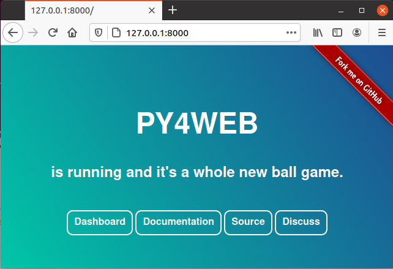
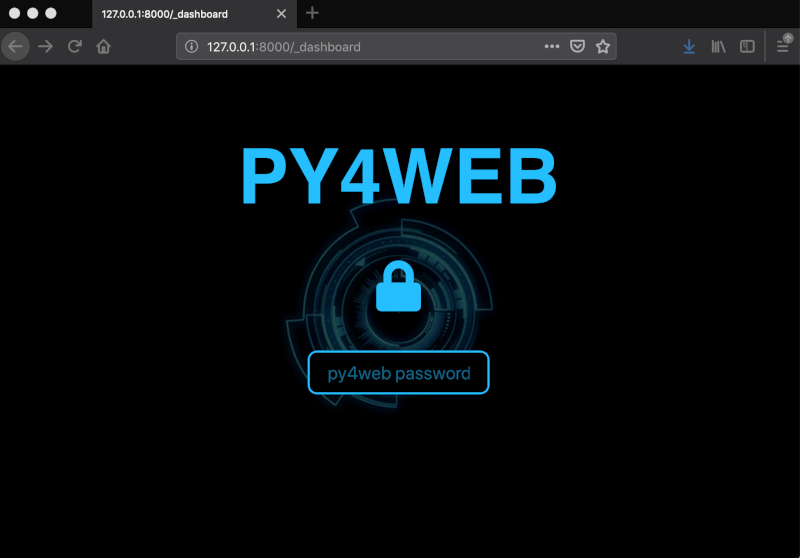
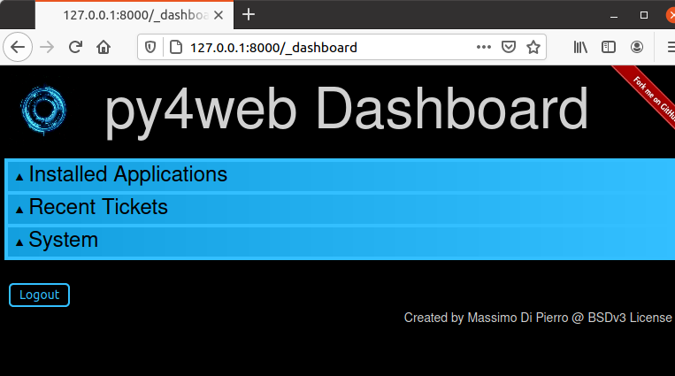
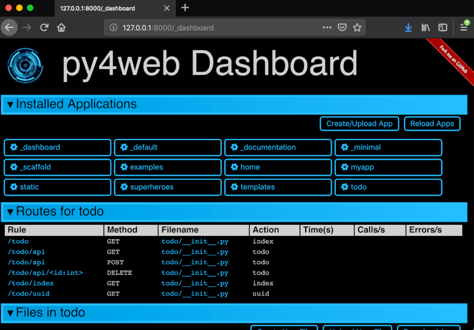
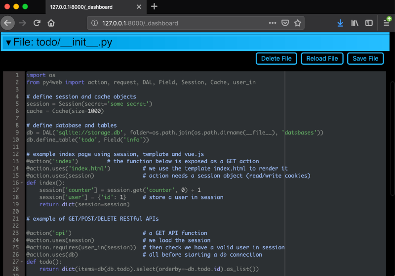
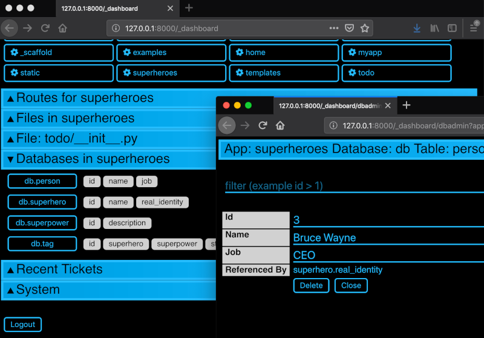
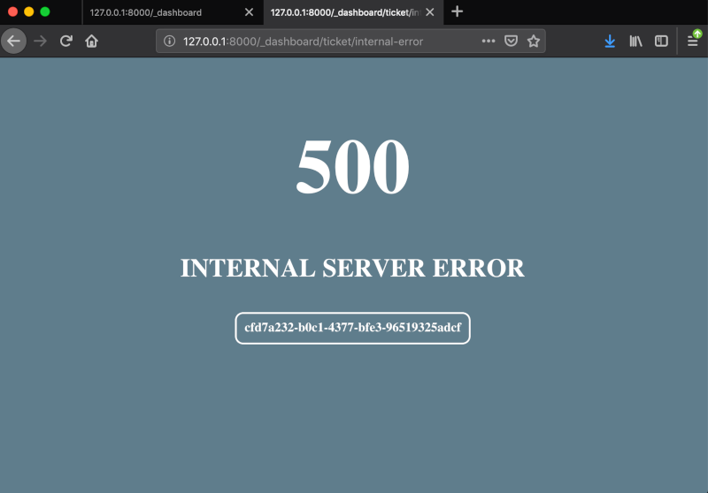
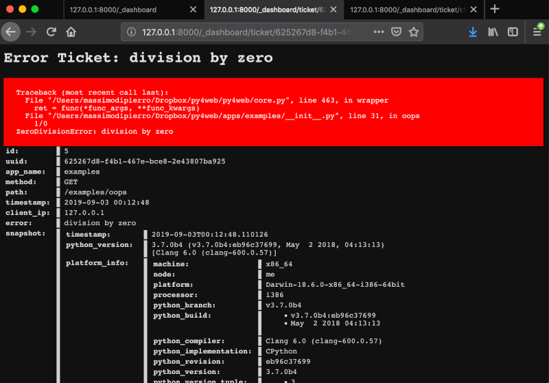

O Dashboard
The Dashboard is the standard web based IDE; you will surely use it extensively to manage the applications and check your databases. Looking at its interface is a good way to start exploring py4web and its components.
A página Web principal
When you run the standard py4web program, it starts a web server with a main web page listening on http://127.0.0.1:8000 (which means that it is listening on the TCP port 8000 on your local PC, using the HTTP protocol).
You can connect to this main page only from your local PC, using a web browser like Firefox or Google Chrome:
Os botões são:
Dashboard (http://127.0.0.1:8000/_dashboard), which we’ll describe in this chapter.
Documentation (http://127.0.0.1:8000/_documentation?version=1.20201112.1), for browsing the local copy of this Manual.
Source (https://github.com/web2py/py4web), pointing to the GitHub repository.
Discuss (https://groups.google.com/forum/#!forum/py4web), pointing to the Google mail group.
Sessão no Dashboard
Pressionando o botão do painel irá transmitir-lhe para o login Dashboard. Aqui você deve inserir a senha que você já setup (veja: ref: option comando set_password). Se você não se lembre da senha, você tem que parar o programa com CTRL-C, configurar um novo e execute o py4web novamente.
Depois de inserir a senha do painel direito, será exibido com todas as abas comprimido.
Clique no título de um guia para expandir. As guias são dependentes do contexto. Por exemplo, aba aberta “Instalado Aplicativos” e clique em um aplicativo instalado para selecioná-lo.
Isto irá criar novas guias “Rotas”, “Arquivos” e “Modelo” para o aplicativo selecionado.
The “Files” tab allows you to browse the folder that contains the selected app and edit any file that comprises the app. If you edit a file by default it will be automatically reloaded at its first usage (unless you’ve changed the watch option with the Opção `` comando run``; in this case you must click on “Reload Apps” under the “Installed Applications” tab for the change to take effect). If an app fails to load, its corresponding button is displayed in red. Click on it to see the corresponding error.
O painel expõe o db de todas as aplicações que utilizam RESTAPI pydal. Ele também fornece uma interface web para realizar operações de busca e CRUD.
Se um usuário visita um aplicativo e desencadeia um erro, o usuário é emitido um bilhete.
O bilhete é registrado no banco de dados py4web. O painel exibe as edições recentes mais comuns e permite pesquisar bilhetes.
